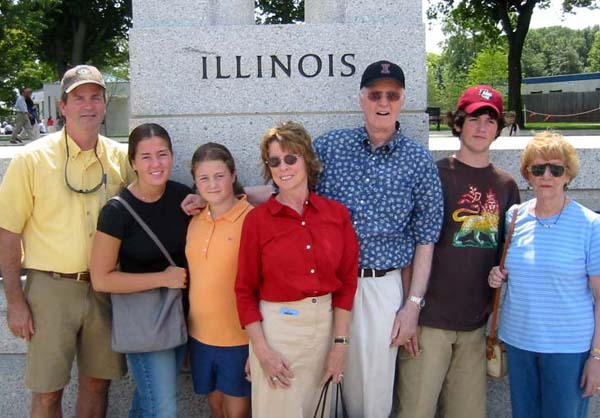

|
Table of Contents < - - - return
World War II Story by Robert F. Gallagher Epilogue  Bob Gallagher (third from right) and family visit the Illinois
station of the the World War II Memorial
After two years and ten months in the army, I had learned many things but most of them would have no practical use in civilian life. I had seen many places and returned to civilian life with mixed feelings. Undoubtedly, it was the most exciting time of my life. It was a unique experience that I would not have missed for the world, but I certainly would not want to do it over again. I had participated in a truly "world war" that was the largest in history. I had served my country without hesitation, and for this I had been rewarded. Rewarded in knowing that I had done the right thing in always being able to hold my head high with the feeling that, when my country needed me, I responded. Being in the army would turn out to be the defining episode of my life and greatly affected my future. How hard that would have been to anticipate during the war years. It was only later in life that I felt the need to analyze these feelings. Upon discharge in early 1946, I was still a young man. My thoughts at the time were primarily about the future, although, only the near future. Reminiscences about the war at that time were primarily for the purpose of telling one of my returned veteran buddies a story about some unusual happening or about some outlandish character I had met. Little or no effort was made to ponder the deeper meaning of what had happened and the ramifications of it on my future life. Psychological and other deeper meanings of things came only when I was much older. Also, unlike most other veterans, I had a large number of photographs with many of them taken at strategic locations before, during and immediately after the war. Fortunately, I had outlined many of my experiences with the names, places, and dates with little anecdotes of each immediately after my discharge from the service. I was able to add more details to them a few years later and to glean even more memories that they generated while preparing this book. In doing so, I was able to not only produce a history of what had happened but also to understand the effect that the experience would have on my later life. Also, after many years of trying, I finally was able to find veterans of my 815th Battalion through the VFW (Veterans of Foreign Wars) organization. The ten men I found furnished me with some of the information found in this story. Some of it was things I had forgotten, and other happenings that I had never known about. It was easy to summarize my experiences during the war but not so easy to analyze them objectively. There were many high moments, low moments, disappointments, and exciting times that all come together in a mixture of feelings. I enjoyed the friendships I experienced, the excitement that gave me lasting memories, and the opportunity to see places that I would not have other wise. The things I would rather forget are: the death, destruction, upheaval, and misery seen in Europe; waste of people and resources caused by warfare; and the boredom, inefficiency, and inequalities of the Army. There was one good thing that resulted from my military service that outweighs all the unpleasant ones. While it happened after I was discharged, it would not have occurred at all if I had not spent time in the Army. The years of service greatly matured me and when I decided to go to college, I was able to do so under the GI Bill of Rights at no cost to me. Before the war, I had neither the inclination nor the money to do so. This bill, more than any other act ever passed by the government, changed the social structure of the country. It allowed millions of ex-GIs like me to go to college, which previously had been the opportunity only of the few, mainly the wealthy. It gave the country a whole new class of educated people. The degree I earned while in college was of a tremendous value in changing my standard of living. It also had the effect of changing my future family's thinking about the value of a college education and the resulting success it brings. All five of my children graduated from college with some of them going on for advanced degrees. To them, it was just the natural thing to do. The new mindset had been established many years earlier. One thing I am sure about is the fact that I was lucky to have drawn the kind of duty that enabled me to survive the war without a scratch. I had seen that men died or were badly wounded on a random basis. However, being in certain branches of the army like the infantry increased your chances many times. Whether it was luck, fate, coincidence, or God's way that determined what had happened to me, I am grateful that it worked out the way it did. Looking back on it, there were four episodes in my army experiences that could have produced a more dangerous assignment and possibly have resulted in a less positive ending. First, despite two tries, I was unable to get into the Army Air Force to be a pilot. Undoubtedly, this was my greatest disappointment during the war and possibly of my life. But, in failing to do so, it may have greatly increased my life span. After seeing John Boswell's name on a list of those who were killed, I realized that what had happened to him could also have been my fate. Although the fact that he was killed does not mean that I would have been too, it did make me ponder the trick of fate that kept me from achieving that goal. Flying airplanes, especially over enemy territory, would have been a much more dangerous duty than the one I had. Second, and directly relating to the first, was the fact that even if I had been accepted as an Air Cadet and especially after the second test I took, there is a strong possibility that I still may not have finished the pilot program. By the time I was able to apply for the second time, the Army Air Force had achieved air superiority in both theaters of operation and they were not going to need as many pilots as originally thought. At one point, 71,000 aviation cadets were released for the ground forces, primarily to line outfits with most of them going to the infantry. Third, when I heard that I was eligible for the army's ASTP program, I envisioned spending a good part of the war at some university earning credits for a degree. When that never happened, it was another disappointment. What I learned later was, at the time I would have been in the program, more than half of the students were sent into rifle companies with resulting heavy casualties. Because they did not have the proper training in infantry tactics, they were ill equipped to meet the challenges of a rifleman. In February 1944, in anticipation of manpower needs, the army cut the ASTP program from 150,000 to 30,000. Again, I would more than likely have never finished the program if I had been selected to start it. Fourth, it was a small miracle that our Battalion was not broken up and assigned to line outfits. Before we were sent over to Europe in the later part of 1944, this was the fate of most antiaircraft units who were stationed at Camp Haan in California. Later, while we were encamped in England, we came close to becoming infantry replacements as the Battle of the Bulge raged over in Europe. If it had lasted much longer than it did, I am sure that we would have been converted. What saved us from these close calls and resulted in my having a less hazardous duty for the rest of the war, is anyone's guess. I am grateful for what happened or, more accurately, for what did not happen. Each of these four near misses can be described as "dodging the bullet." Literally, I feel that I dodged four bullets. There were some specific things that I did not like about the Army and I know I am not alone in this. Some were important at the time while others were of less importance and today might even seem trivial. Some of them are:
In compiling this story, many questions were either revived or generated anew that will probably never be answered. They are interesting to ponder.
THE END Editor's note: Bob Gallagher passed away on January 24,
2013
from complications from cancer, he was 88 years old. This site is now
supported by his son - Mark Gallagher
Table of Contents < - - - return _________________________ Footnotes and Source of Photographs. Copyright, Robert F. Gallagher, 1999 - 2015, all rights reserved on all images and content.
|